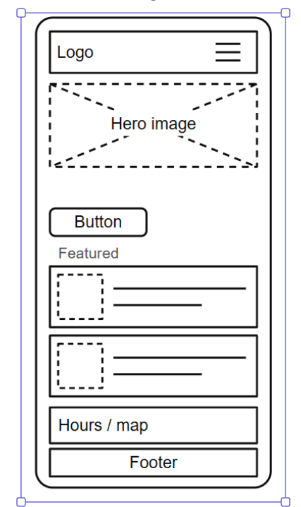
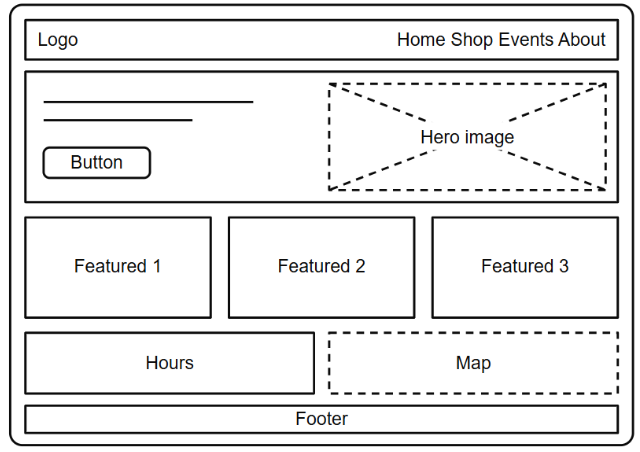

Site Name
Selah House
"Selah" is a word often read as a moment to pause, which fits the shop's slogan: Pause, Breathe, Enjoy. The name tells visitors this is a calm neighborhood spot to slow down, and it is short and easy to remember.
Site Purpose
The site gives local residents, students, and remote workers an easy way to check the menu, find the shop, and plan a visit from their phones. It will provide:
- A filterable drink and food menu, loaded from a JSON file
- Today's specials and a drink suggestion based on the weather
- The shop's location, hours, and contact information
- A pickup order request form
The site will have four pages: Home, Menu, Order, and About & Contact.
Scenarios
- What is on the menu today, and which drinks are dairy-free?
- Is the shop open right now, and how far is it from where I am?
- Can I order ahead so my coffee is ready when I arrive?
- What drink would be good for this weather?
Color Scheme
| Color | Hex | Where it will be used |
|---|---|---|
| Forest | #2f4f3a | Header background, section headings, links, and the accent border on each section |
| Cream | #f6efe8 | Page and card backgrounds, and text on dark backgrounds |
| Clay | #d9b8a5 | Card borders, dividers, and buttons (with dark text) |
| Espresso | #4a3528 | Body text, footer background, and table headings |
Typography
Fraunces: headings
Today's specials at Selah House
Used for the site name, page titles, and section headings. Its soft, rounded serif shapes feel friendly and handmade.
Source Sans 3: body text
Open daily. Order ahead and pick up at the counter.
Used for paragraphs, menu descriptions, navigation, form labels, and buttons. It stays clear and readable on small phone screens.
Wireframe
Black and white sketches of the Home page for a small screen and a wider screen.

